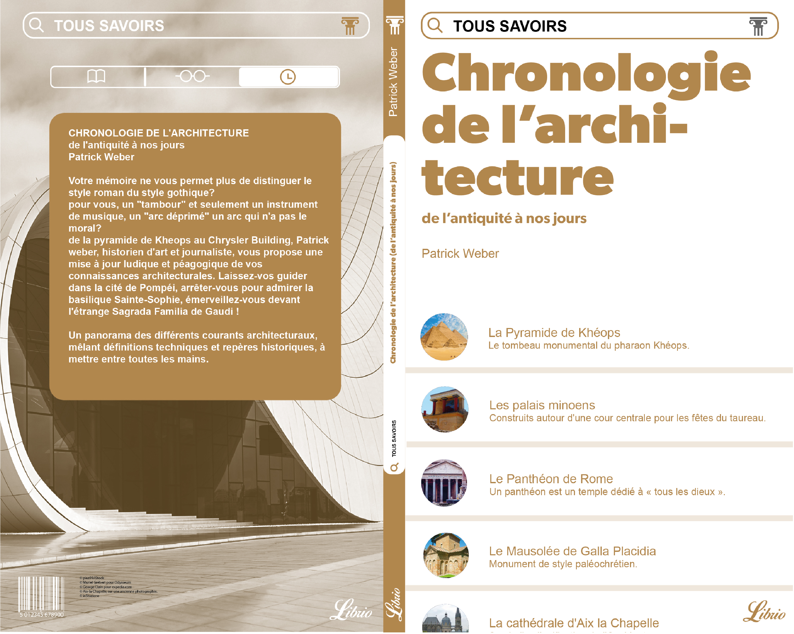
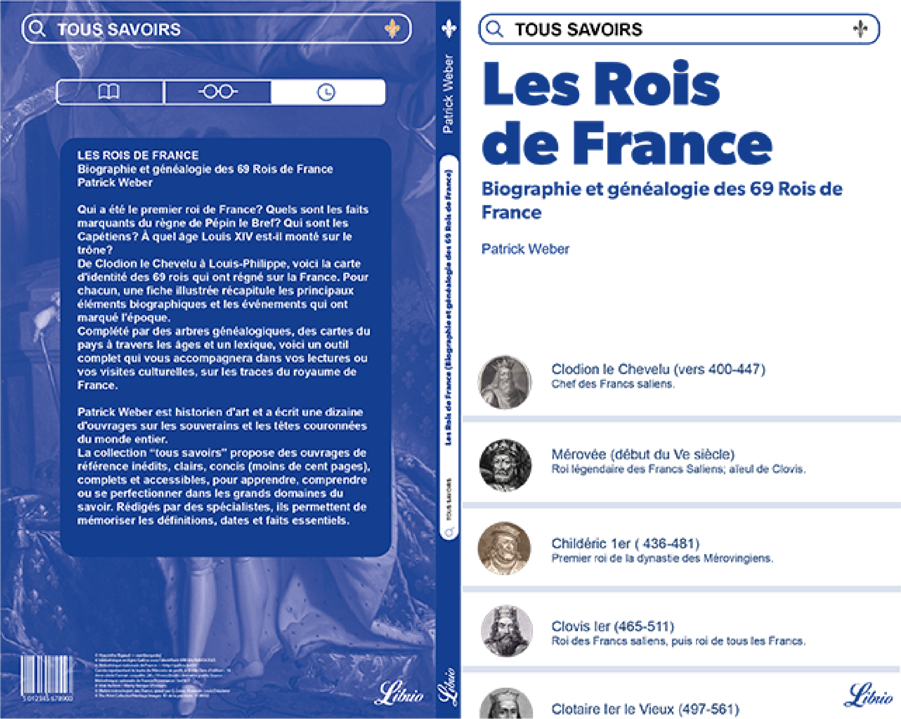
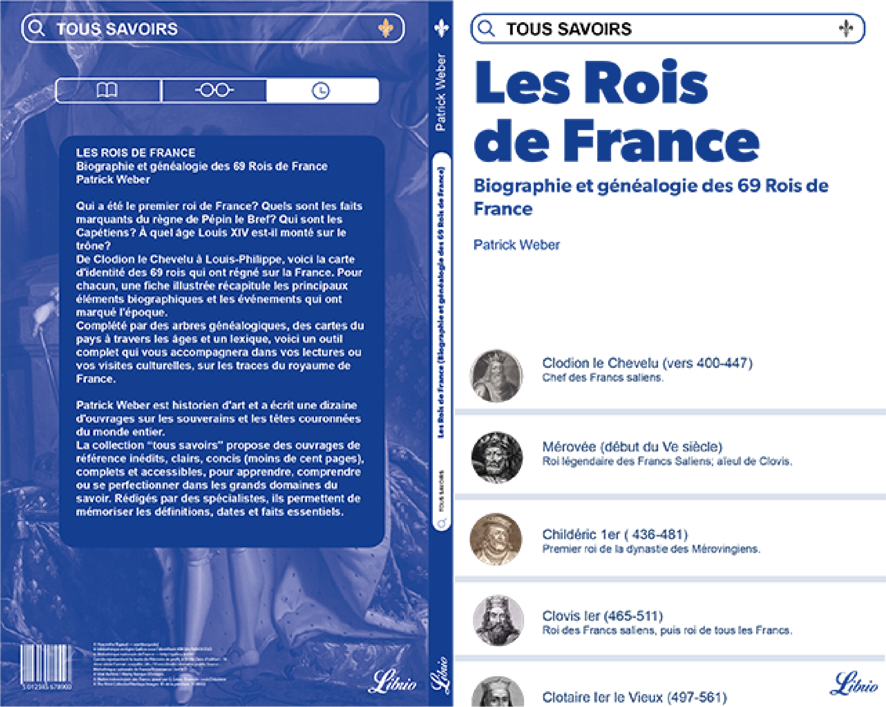
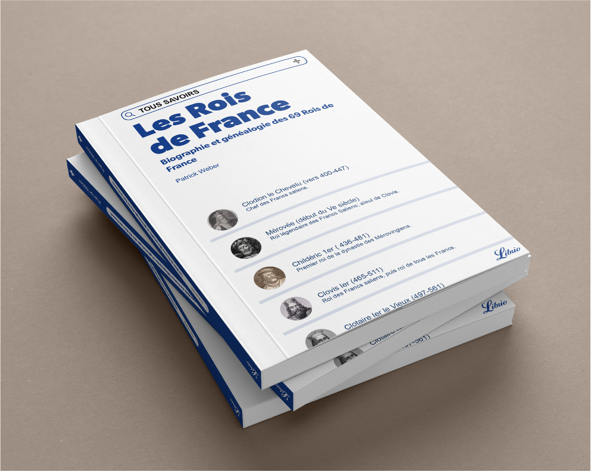
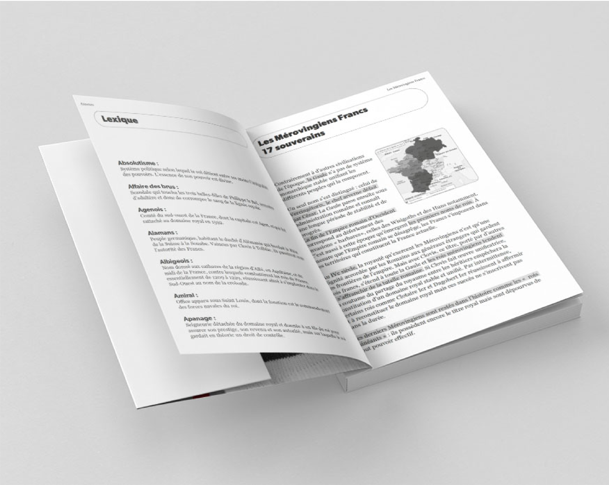

Tous Savoirs
EDITION/ mise en page - indesign - maquette
[2024]
Pour ce projet, le but est de concevoir la ligne graphique de la collection Librio. Les éditions Librio décident de sortir une nouvelle collection, appelée “tous savoirs”, fonctionnelle, claire et répondant au besoin de trouver des informations. L’élaboration du typogramme de la collection, le principe de couverture et la maquette intérieure devra cibler un public désireux.
Pour se faire, un principe d’identification et de référence à une interface numérique illustre un principe, en cohérence avec une attractivité assurée. Une envie de «scroller» s’identifie afin d’accéder à un condensé de savoirs organisé. La mise en page incite à vouloir en découvrir d’avantage sur ce livre qui communique une organisation claire.
 

Une fois imprimé et relié, il est intéréssnt de voir la relation entre l’intérieur et l’exterieur de l’ouvrage. La maquette intérieure en monochromie doit être en relation avec le principe de couverture. Pour se faire, l’identification d’une page web et du principe de mise en page des informations est alors appliqués. On conserve le surlignage et les vignettes de page web qui permettent de repérer des passages importants tout en les rendant clairs. Les rubriques sont aussi pensées en fonction du principe pour permettre au lecteur de se sentir sur une surface qu’il connait.
 